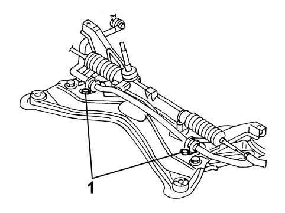

4410CA CHECKS ON ANTI-ROLL BAR
- Path
- Test > 44 SUSPENSION AND WHEELS > 4410 FRONT SUSPENSION > 4410C STABILIZER BAR AND ANCHORAGE STRUTS > 4410CA CHECKS ON ANTI-ROLL BAR
- Kind
- test / check procedure
- Applies to
- all engines; all production periods
- Interactive page
- https://sloeber94.github.io/elrnDB-fPnd/en/#/169001005
Applies to: all engines; all production periods
- Position the vehicle on a two column lift.
- Raise the vehicle and check that the anti-roll bar is correctly positioned (transversely) in relation to the centre line.
Check that there is no wear of the paint at the contact points between the bar and the crossmember.
1. Check, using
Fastening | Component | Diameter | Value (daNm) | |
|---|---|---|---|---|
1 | Bolt | Crossmember | M8 | 2 |
